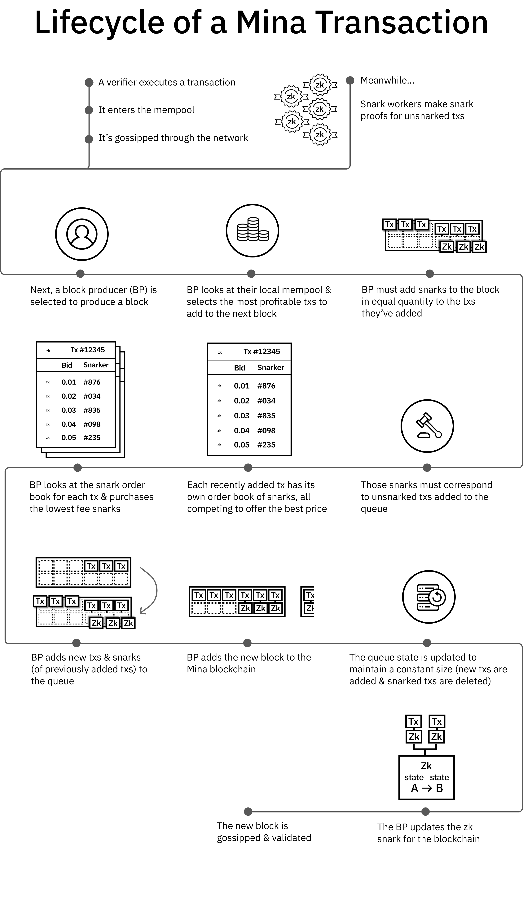
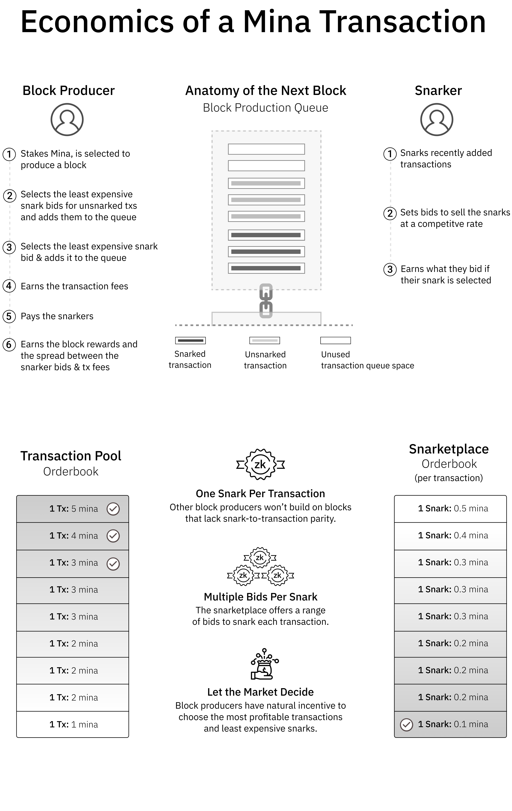
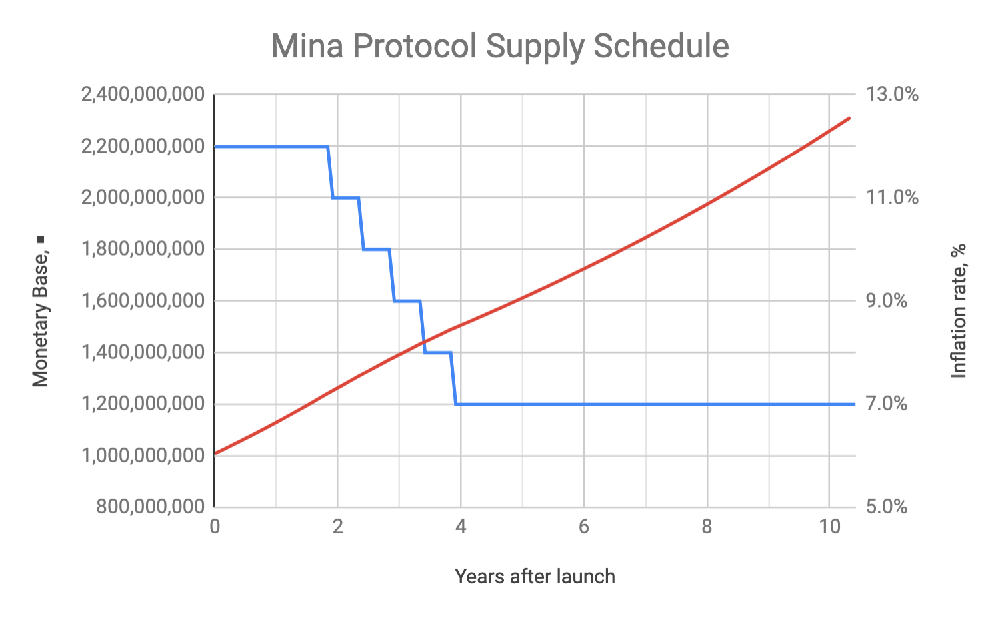
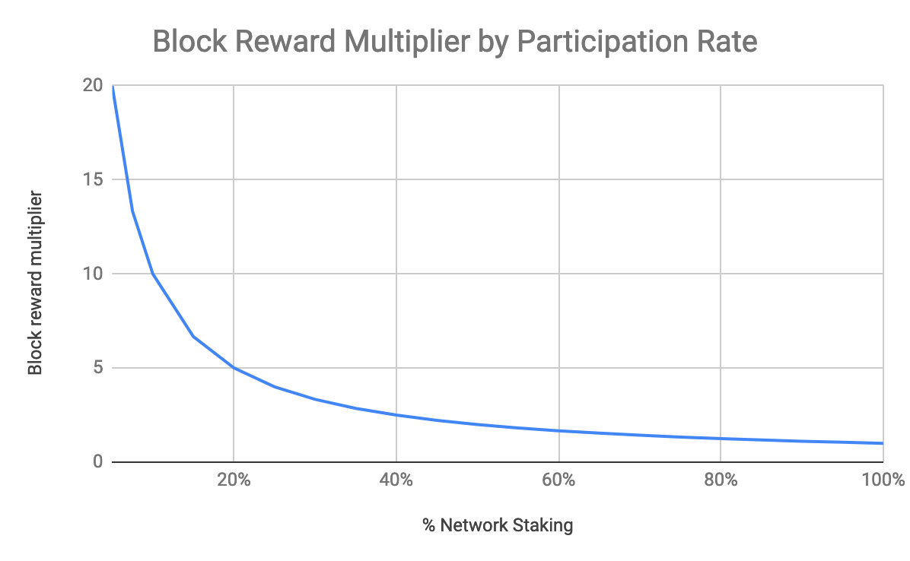

Mina: Economics and Monetary Policy
Brad Cohn, Evan Shapiro, and Emre Tekişalp
O(1) Labs
October 2020
Abstract
As cryptocurrencies become more popular and widely used, the cost to verify the blockchain
grows proportionally with total transaction throughput and quickly becomes out of reach
for most real-world users.
In this way, cryptocurrencies can end up victims of their own
success, becoming increasingly inaccessible to their users who in turn are required to trust
intermediaries. Mina Protocol solves this problem by replacing the blockchain with an easily
verifiable proof. Such a protocol requires a careful separation of roles, incentive design, and
sound monetary policy to function properly and resist exploitation. We present the main
considerations below.
1
Introduction
By combining cryptographic techniques with economic incentives, Bitcoin[Nak09] became the first
decentralized peer-to-peer payments protocol. A critical aspect of Bitcoin’s design is the extent
to which different components reinforced and strengthened one another. For example, Proof of
Work imposes a cost on block production, which discourages bad actors from submitting invalid
transactions. However, that incentive is dramatically multiplied by the use of a blockchain to store
historical transactions, because it makes any tampering immediately evident to all peers on the
network with a very low computation cost. This technique—making attacks costly and defense
cheap—is a cornerstone of modern cryptography and a hallmark of a well-designed cryptoeconomic
protocol.
However, Bitcoin’s design has some limitations.
While blockchains enable rapid tamper-
detection, they do not provide rapid evidence of correctness. In fact, each time a new partici-
pant joins the network, they must check every transaction since the beginning of the network to
verify correctness. This requirement grows linearly with total transaction throughput and quickly
becomes out of reach for most real-world users on resource constrained devices like smartphones.
In this way, as cryptocurrencies become more popular and widely used, they end up
victims of their own success, becoming increasingly inaccessible to their users who in
turn are required to trust intermediaries.
Recursive zk-SNARKs provide a solution to this dilemma. Similar to how blockchains enable
constant-time tamper-evidence of a historical ledger, recursive zk-SNARKs enable constant-time
correctness-verification of a historical ledger. Instead of each participant on the network verifying
historical transactions for themselves, the network collaborates to generate proofs-of-correctness
for transactions (zk-SNARKs), and then shares those around the network. So instead of end users
trusting intermediaries to provide accurate information about the state of the ledger, they are given
the state along with a zk-SNARK which cryptographically guarantees that state is accurate. In
short, Mina Protocol replaces the blockchain with an easily verifiable proof. For more
details on the technical implementation of this protocol, refer to the technical whitepaper[BMRS20].
Such a protocol requires a careful separation of roles, incentive design, and sound monetary
policy to function properly and resist exploitation. We describe the main design considerations
below.
1
2
Network Roles and Incentives
Most cryptocurrency protocols have at least two roles in their networks: 1) those who verify every
transaction in the network, often called full nodes, stakers, or miners, and 2) those who trust third
parties to verify transactions for them, such as light clients. As these protocols gain adoption, it
becomes increasingly expensive to verify the ledger, so more participants become priced out of the
first group and pushed into the second. For example, even though Bitcoin has averaged less than 1.5
transactions per second historically, a new member of the network must verify nearly 500,000,000
transactions in order to have full-node security. This problem is compounded in some proposed
cryptocurrencies, which claim to have 10x-100,000x the transaction throughput of Bitcoin, and
therefore generate gigabytes or terabytes of data every week under peak loads.
In contrast, Mina has constant resource requirements: regardless of how many transactions
the network has processed, users can fully verify the current state with just a small zk-SNARK.
To support this, Mina has three roles in the network, each incentivized to participate by different
mechanisms.
2.1
Verifiers
We expect the vast majority of network participants to be capable of verifying. Because Mina uses
recursive zk-SNARKs to continuously prove state validity, full-node security is achieved by simply
downloading a zk-SNARK, which is around a few hundred bytes and takes a few milliseconds of
compute to verify. The zk-SNARK certifies consensus information and a Merkle root to a recent
ledger state. At this point, verifiers can request Merkle paths to relevant parts of the state. By
checking the Merkle path, verifiers ensure that the parts of the state they care about (such as their
account balances) are indeed contained within the same ledger that’s certified by the zk-SNARK.
2.2
Block Producers
Block producers are akin to miners or stakers in other protocols. They are incentivized by protocol
distributions in the form of block rewards or coinbase transactions, as well as network fees paid
by users. Importantly, block producers are not incentivized by the threat of slashing in order to
participate, as Mina uses Ouroboros[DGKR17]. In addition to directly staking, individuals can
delegate their stake to another block producer. This allows the delegate to stake—but not send
transactions—on another’s behalf.
As is common, block producers select which transactions to include in the next block. Obviously,
they are incentivized to include the highest fee transactions. However, in order to ensure the
blockchain remains succinct, block producers have an additional responsibility: for each transaction
they add to a block, they must SNARK an equivalent number of previously added transactions. If
they don’t do so, their block won’t comply with the consensus rules and will be rejected by other
nodes. It may be helpful to imagine a queue of transactions. If a block producer wants to add 10
transactions to the back of the queue (so they can claim the transaction fees), they must SNARK
10 transactions from the front of the queue. They may produce those SNARKs themselves, or
they may select them from a marketplace that other specialized network participants, Snarkers,
contribute to.
2.3
Snarkers
Snarkers, described in the technical Mina whitepaper[BMRS20], are network participants who
produce zk-SNARKs that verify transactions. They are compensated by posting fees for doing so,
called bids, and if their SNARKs are used in a block, the block producer pays out those fees from
the total transaction fees.
Given that many different Snarkers can post fees for a single transaction, and block produc-
ers are incentivized to minimize the fees they pay out for SNARK work, this naturally forms a
marketplace where participants compete to produce the most cost-efficient zk-SNARK proofs. For
convenience, we can refer to this as the Snarketplace. Below, we’ll evaluate some of its economic
dynamics.
First, as long as there is some amount of latent compute available on the network—–almost
certainly assured by a network of block producers–—the Snarketplace will not affect the protocol’s
liveness or censorship resistance, since there will always be a bid to produce SNARKs at some cost.
2
To see this, consider the incentives of a network participant who has spare compute capacity and
observes SNARK fees rising on the network due to a lack of SNARK production. When SNARK
fees go above the marginal cost of SNARK production for this participant, if they are a rational
economic actor, they will begin offering bids above their price of production and below market price
to capture profit, therefore stabilizing SNARK fees. Block producers can simply pass along those
fees to those who are transacting. In practice, the computation cost to generate a SNARK should
be extremely low, in the range of less than a penny per transaction at current cloud computing
prices.
Second, given economies of scale, it’s possible that some SNARK operations could become
more dominant over time, as some mining operations have with Bitcoin. However, any resulting
concentration of SNARK production would not have any bearing on the censorship resistance or
liveness of the protocol. This is because anyone will be able to produce SNARKs at some price.
So even if there was some SNARK producer who could offer cheaper SNARKs, if they refused to
process certain transactions, anyone else on the network could provide a SNARK for a slightly
higher fee, and block producers would still be incentivized to include it in the ledger. Third,
an explicit, voluntary coordination mechanism that prevents double-proving would likely reduce
SNARK fees and computational waste on the network, though such a mechanism isn’t necessary
for security or liveness.
2.3.1
Censorship resistance
It may be worthwhile to expand a bit on the argument supporting censorship resistance. While
there are a number of plausible attacks to bitcoin’s censorship resistance[NBF+16], it turns out
you can be included in a block if you just pay a high enough fee or wait long enough. Mina is very
similar to bitcoin, with the added complication that you also need your transaction to be Snarked
at some point after it is included in the block.
So for Mina to not be censorship resistant, a transaction would have to be included in a block
and then never Snarked. That would require collusion among all Snarkers (who would refuse to
Snark the transaction) or all block producers (who choose not to include the Snarked transaction
in the ledger updates). By Ouroboros assumptions we can presume the network is decentralized
and so block producers aren’t colluding.
Now let’s turn to Snarkers. Because the computation cost of Snarking a transaction is both
extremely low and accessible to anyone with a computer, getting all Snarkers to collude is far
more difficult than getting all block producers to collude. Existing Snarkers cannot prevent a new
Snarker from entering the market. If someone notices a transaction not being Snarked, they could
easily and profitably offer to Snark it, and even with very low transaction fees a block producer
could profitably include the Snarked transaction in a ledger update.
3

4

5

3
Nomenclature and Denomination
Individual units of the currency are called mina. The initial supply of Mina is 1,000,000,000. Each
mina is divisible into 1 billion units (nanomina). Intermediary denominations of the currency use
standard metric prefixes:
1. 1 = 1 mina
2. 0.01 = 1 centimina (cent)
3. 10−6 = 1 micromina
4
Monetary Policy
Because Mina uses a variant of Ouroboros Proof of Stake[DGKR17][BMRS20], block rewards and
fees are distributed approximately pro-rata to current holdings as long as everyone in the network
is staking. Therefore, assuming high staking participation, any nominal inflation in the proto-
col is cancelled out by a nominal return denominated in the protocol, ensuring that accounts’
proportional holdings of the currency remain constant.
However, those who do not choose to stake or delegate will experience dilution relative to those
who do. In order to motivate participants to begin staking, Mina’s nominal inflation will begin at
12%. Then, over the course of the first five years, the inflation rate will fall to 7%, and remain at
7% thereafter by default, subject to changes via the chain’s governance1.
Importantly, the protocol will target these inflation rates regardless of the staking participation
rate. That means that block rewards will change dynamically to target this inflation rate. For
example, if only 50% of the network stakes, then block rewards will double. This is because per
Ouroboros, number of blocks produced per epoch is expected to be proportional to the staking
ratio. This naturally encourages more individuals to stake at low participation rates.
1A governance paper is forthcoming.
6

The primary consideration when lowering inflation rates would be determining whether rewards
are higher than is necessary to ensure block producers have sufficient incentive to validate without
requiring a large increase in fees.
It is also important to architect how monetary policy enables the ongoing development of a
decentralized network such as Mina. Inflation, in the form of block rewards, is used to secure
the chain against attacks by incentivizing validation by block producers. However, security is not
the only requirement for a new network. Namely, long-term maintenance and improvement of the
protocol will also require funding. We suggest the most suitable mechanism for this is the creation
of special block rewards, allocated to recipients as determined by the chain’s governance.
References
[BMRS20] Joseph Bonneau, Izaak Meckler, Vanishree Rao, and Evan Shapiro. Coda: Decentralized
Cryptocurrency at Scale, 2020.
[DGKR17] Bernardo David, Peter Gaži, Aggelos Kiayias, and Alexander Russell. Ouroboros praos:
An adaptively-secure, semi-synchronous proof-of-stake protocol.
Cryptology ePrint
Archive, Report 2017/573, 2017. http://eprint.iacr.org/2017/573.
[Nak09]
Satoshi Nakamoto. Bitcoin: A peer-to-peer electronic cash system, 2009.
[NBF+16]
Arvind Narayanan, Joseph Bonneau, Edward Felten, Andrew Miller, and Steven
Goldfeder. Bitcoin and Cryptocurrency Technologies: A Comprehensive Introduction,
2016. Feather Forking.
7
Document Outline